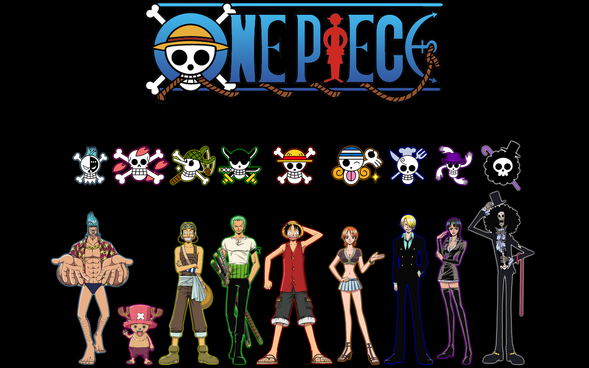

What I believe is the best anime out there
I'll break them down by genre
Action
Here are some of my favorite action anime
- One Piece
- 
- Fullmetal Alchemist

- Bleach
Horror/Thriller
The best horror/Thriller
For first-timers, here's a good reference Must-watch-horror-anime
-
- An anime about a girl who suddenly was able to see spirits of all levels

-
- This anime is about alien parasites that takes over their host, eventually. But there are few that can co-exist with the parasite.
-
- This anime, well you'll just have to watch and see for yourself.
Sci-fi/fantacy
If you love science-fiction and fantasy you'll love these!